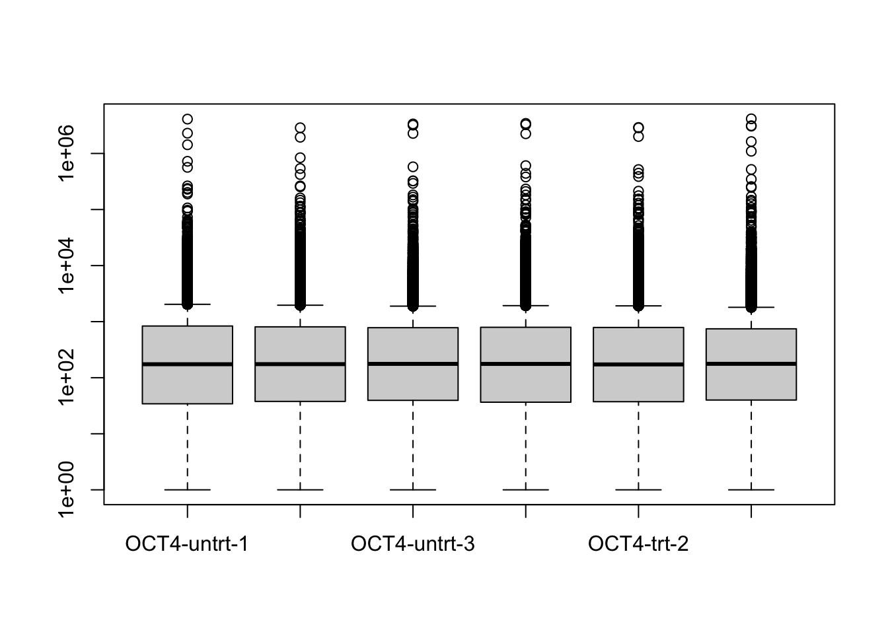
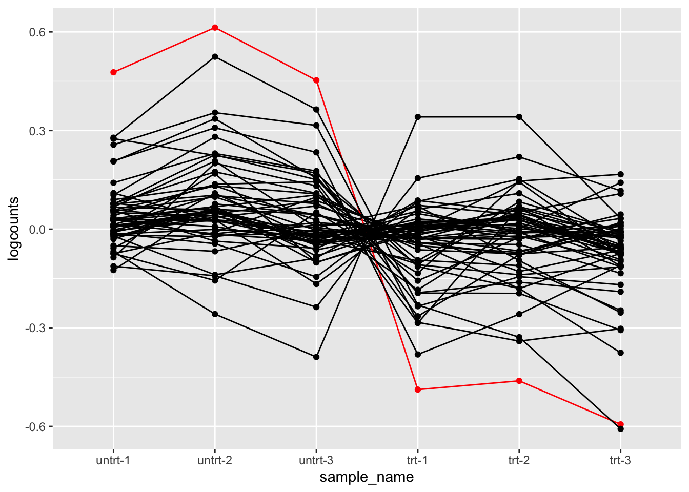
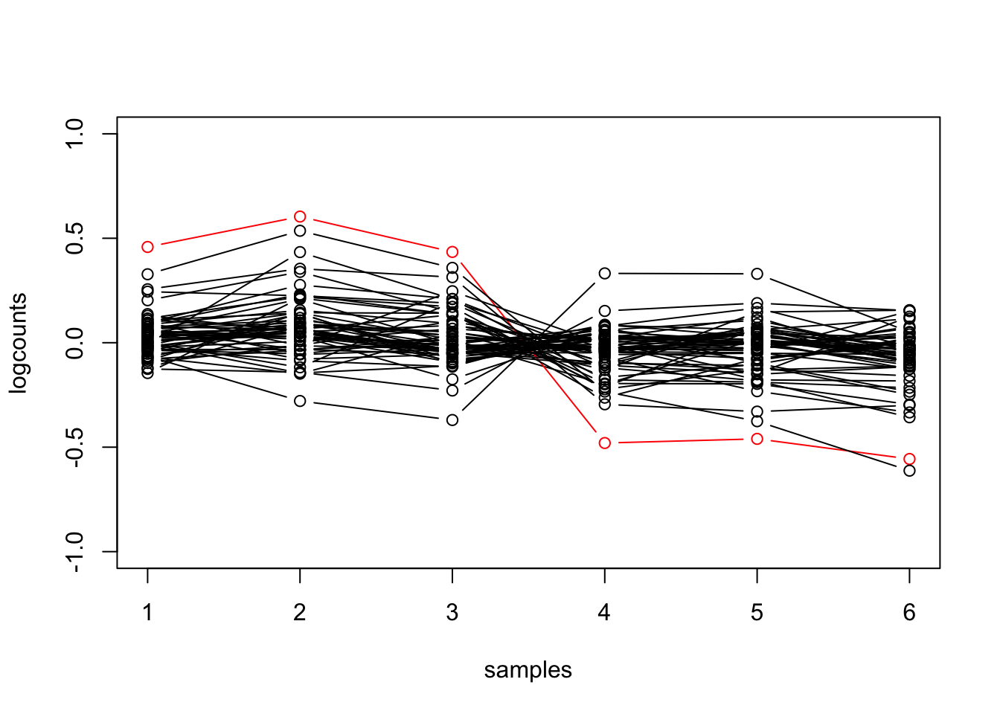
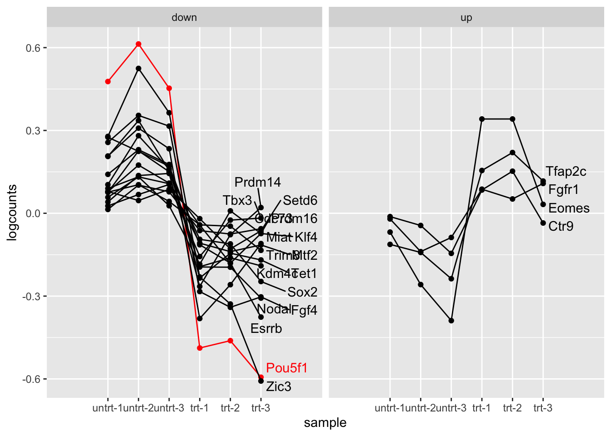

Chapter 7 RNA-seq EDA
Objective: learn how to make basic EDA plots (plotting scaled counts) of RNA-seq data using tidy-style verbs.
The tidybulk Bioconductor package and associated tidy transcriptomics ecosystem (tidySummarizedExperiment, tidySingleCell, tidyseurat, etc.) provide a bridge between the SummarizedExperiment-style representation of matrix data with attached metadata, to the tidy-style representation of data (one row per observation). For more details on the package, check out the tidybulk website, and the publication: Mangiola et al. (2021).
Here we will briefly examine the difference between tidy manipulation of these matrix-style objects compared to how these objects would be manipulated in other Bioconductor workflows (e.g. DESeq2, edgeR, or limma workflows). As you will see, there are multiple ways to generate the same or similar exploratory plots and analyses. we recommend to consider which is more appropriate to your purpose. For package code, you may prefer to have fewer dependencies, going with core Bioconductor objects and packages. For scripting, the “fluent” and piped style of tidybulk may be preferable, and easier for others to read and modify your code at a future date.
Here we just compare code for some basic tasks, scaling counts and performing DE with DESeq2. However, note that tidybulk has many functionalities implemented, including dimension reduction and visualization (PCA, MDS, tSNE, UMAP), clustering, gene set testing, cell type composition analysis and cell abundance testing, unwanted variation modeling, imputation, etc.
Start by loading this RNA-seq dataset from the following paper: King and Klose (2017) “The pioneer factor OCT4 requires the chromatin remodeller BRG1 to support gene regulatory element function in mouse embryonic stem cells” https://doi.org/10.7554/eLife.22631. The experiment focused on OCT4 as it is a “core pluripotency transcription factor” which “occupies sites that would otherwise be inaccessible and is required to shape the occupancy of additional pluripotency transcription factors.”
In this experiment, transcription in mouse embryonic stem cells (ESC) was compared with and without OCT4. This was done using a conditional mouse ESC line where treatment with a compound leads to loss of OCT4 expression. The experiment also involved the same approach to another transcription factor BRG1, but we focus here on the OCT4 samples.
First we load the metadata about the samples:
library(oct4)
dir <- system.file("extdata", package="oct4")
coldata <- read.csv(file.path(dir,"coldata.csv"))
coldata## names line condition
## 1 SRX2236945 OCT4 untrt
## 2 SRX2236946 OCT4 untrt
## 3 SRX2236947 OCT4 untrt
## 4 SRX2236948 OCT4 trt
## 5 SRX2236949 OCT4 trt
## 6 SRX2236950 OCT4 trt
## 7 SRX2236951 BRG1 untrt
## 8 SRX2236952 BRG1 untrt
## 9 SRX2236953 BRG1 untrt
## 10 SRX2236954 BRG1 trt
## 11 SRX2236955 BRG1 trt
## 12 SRX2236956 BRG1 trtcoldata$files <- file.path(dir, "quants", coldata$names, "quant.sf.gz")Read in the count data with tximeta, which automatically imports the
information about the gene provenance (which transcripts were used to
quantify the gene and isoform abundance). We then summarize the
quantification to the gene-level, and add the gene SYMBOL.
library(tximeta)
se <- tximeta(coldata)
gse <- summarizeToGene(se)
library(org.Mm.eg.db)
gse <- addIds(gse, "SYMBOL")For this workflow, we don’t need the inferential replicates (about uncertainty regarding the quantification), so we keep just the counts, abundances (TPM), and gene lengths. We also manipulate the metadata a little bit.
library(SummarizedExperiment)
assayNames(gse)
assays(gse) <- assays(gse)[1:3]
gse$rep <- rep(1:3, 4)
colnames(gse) <- paste(gse$line,gse$condition,gse$rep,sep="-")
assay(gse, "counts") <- round(assay(gse, "counts")) # for DE consistency
# save for easy loading later
save(gse, file="data/oct4_obj.rda")library(SummarizedExperiment)
load("data/oct4_obj.rda")The dataset looks like this (remember it has untreated and treated samples for both OCT4 and BRG1).
gse## class: RangedSummarizedExperiment
## dim: 53697 12
## metadata(6): tximetaInfo quantInfo ... txomeInfo txdbInfo
## assays(3): counts abundance length
## rownames(53697): ENSMUSG00000000001.4 ENSMUSG00000000003.15 ... ENSMUSG00000117654.1
## ENSMUSG00000117655.1
## rowData names(3): gene_id tx_ids SYMBOL
## colnames(12): OCT4-untrt-1 OCT4-untrt-2 ... BRG1-trt-2 BRG1-trt-3
## colData names(4): names line condition repWe will be interested in the gene set from the Gene Ontology project, which describes maintenance of pluripotency. We can extra this from the mouse organism data package with the following three lines of code:
library(AnnotationDbi)
library(org.Mm.eg.db)## # pluripotency
tab <- select(org.Mm.eg.db, "GO:0019827", "SYMBOL", "GO")## 'select()' returned 1:many mapping between keys and columnstab <- tab[!duplicated(tab$SYMBOL),]
pluri <- tab$SYMBOLNow we start with tidybulk code, comparing in turn to base R.
Loading tidySummarizedExperiment allows us to operate on the gse
object using familiar “tidy” verbs, thanks to an abstraction described
in the tidySummarizedExperiment
documentation.
We filter the samples that correspond to the OCT4 experiment, and then
modify the sample names. Samples are referred to with the special
.sample string, while features are referred to with .feature, so
here we create a new variable to plot the samples sample_name.
library(tidySummarizedExperiment)
library(dplyr)
library(stringr)
oct4 <- gse %>%
filter(line == "OCT4") %>%
mutate(sample_name = .sample %>%
str_remove("OCT4-") %>%
factor(levels = unique(.)),
condition = condition %>% factor(c("untrt","trt")))Note, the third line in the mutate call uses the unique function
to set the levels: the consequence of this is that the sample_name
factor will have levels in the order in which they are present in the
current character vector and not alphabetical.
oct4## # A SummarizedExperiment-tibble abstraction: 322,182 × 18
## # [90mFeatures=53697 | Samples=6 | Assays=counts, abundance, length[0m
## .feature .sample counts abund…¹ length names line condi…² rep sampl…³ gene_id tx_ids SYMBOL
## <chr> <chr> <dbl> <dbl> <dbl> <chr> <chr> <fct> <int> <fct> <chr> <name> <chr>
## 1 ENSMUSG000… OCT4-u… 2920 16.6 2953. SRX2… OCT4 untrt 1 untrt-1 ENSMUS… <chr> Gnai3
## 2 ENSMUSG000… OCT4-u… 0 0 589. SRX2… OCT4 untrt 1 untrt-1 ENSMUS… <chr> Pbsn
## 3 ENSMUSG000… OCT4-u… 1906 19.0 1688. SRX2… OCT4 untrt 1 untrt-1 ENSMUS… <chr> Cdc45
## 4 ENSMUSG000… OCT4-u… 9044 74.8 2034. SRX2… OCT4 untrt 1 untrt-1 ENSMUS… <chr> H19
## 5 ENSMUSG000… OCT4-u… 132 0.826 2688. SRX2… OCT4 untrt 1 untrt-1 ENSMUS… <chr> Scml2
## 6 ENSMUSG000… OCT4-u… 0 0 943. SRX2… OCT4 untrt 1 untrt-1 ENSMUS… <chr> Apoh
## 7 ENSMUSG000… OCT4-u… 444 1.84 4062. SRX2… OCT4 untrt 1 untrt-1 ENSMUS… <chr> Narf
## 8 ENSMUSG000… OCT4-u… 8 0.0554 2430. SRX2… OCT4 untrt 1 untrt-1 ENSMUS… <chr> Cav2
## 9 ENSMUSG000… OCT4-u… 2503 16.3 2588. SRX2… OCT4 untrt 1 untrt-1 ENSMUS… <chr> Klf6
## 10 ENSMUSG000… OCT4-u… 610 7.58 1354. SRX2… OCT4 untrt 1 untrt-1 ENSMUS… <chr> Scmh1
## # … with 40 more rows, 5 more variables: seqnames <fct>, start <int>, end <int>, width <int>,
## # strand <fct>, and abbreviated variable names ¹abundance, ²condition, ³sample_nametidybulk provides access to many steps in bulk analysis, including
filtering and count scaling. For details on what is happening behind
the scene, see the help, e.g. ?keep_abundant describes that it makes
use of edgeR::filterByExpr.
library(tidybulk)
oct4 <- oct4 %>%
keep_abundant(factor_of_interest = condition) %>%
scale_abundance(method="RLE") # DESeq2 scalingIt is straightforward to pipe the data directly into plots:
library(ggplot2)
oct4 %>%
ggplot(aes(sample_name, counts_scaled + 1)) +
geom_boxplot() +
scale_y_log10()
For comparing code, let’s pull out the genes that remain:
gene_idx <- oct4 %>% pivot_transcript() %>% pull(.feature)
head(gene_idx)## [1] "ENSMUSG00000000001.4" "ENSMUSG00000000028.15" "ENSMUSG00000000031.16" "ENSMUSG00000000037.16"
## [5] "ENSMUSG00000000056.7" "ENSMUSG00000000058.6"The equivalent code in DESeq2. Understanding this code requires
knowledge that boxplot plots columns of a matrix.
library(DESeq2)
gse_sub <- gse[ gene_idx , gse$line == "OCT4" ]
gse_sub$condition <- factor(gse_sub$condition)
dds <- gse_sub %>%
DESeqDataSet(~condition) %>%
estimateSizeFactors()## using counts and average transcript lengths from tximeta## using 'avgTxLength' from assays(dds), correcting for library sizeboxplot(counts(dds, normalized=TRUE) + 1, log="y")
We can also make more interesting plots. E.g. for the genes involved in pluripotency, make a line plot, highlighting OCT4. In addition, center the log counts for each gene (subtract the mean of log counts across samples).
oct4 %>%
filter(SYMBOL %in% pluri) %>%
mutate(logcounts = log10(counts_scaled + 1)) %>%
mutate(Oct4 = ifelse(SYMBOL == "Pou5f1", "red", "black")) %>%
group_by(.feature) %>%
mutate(logcounts = logcounts - mean(logcounts)) %>%
ungroup() %>%
ggplot(aes(sample_name, logcounts, group=.feature, color=Oct4)) +
geom_point() +
geom_line() +
scale_color_identity()## tidySummarizedExperiment says: A data frame is returned for independent data analysis.
The equivalent code for base R requires defining more intermediate
variables and control flow code (the for loop). While there’s
nothing particularly right or wrong about the two choices, the above
prioritizes the operations in a way that is human readable. In some
cases, e.g. performing linear algebra operations on matrices, base R
code may prove to be more efficient, which is a consideration for what
to use in package source code.
pluri_idx <- mcols(dds)$SYMBOL %in% pluri
mat <- log10(counts(dds, normalized=TRUE)[pluri_idx,] + 1)
mat <- mat - rowMeans(mat)
hilite <- rownames(dds)[which(mcols(dds)$SYMBOL == "Pou5f1")]
plot(mat[1,], type="n", ylim=c(-1,1), xlab="samples", ylab="logcounts")
for (i in 1:nrow(mat)) {
col <- ifelse(rownames(mat)[i] == hilite, "red", "black")
points(mat[i,], type="b", col=col)
}
We can test for differential expression with DESeq2:
res <- dds[gene_idx,] %>%
DESeq(quiet=TRUE) %>%
results()Or equivalently with tidybulk:
oct4 <- oct4 %>%
test_differential_abundance(~condition, method="deseq2")## =====================================
## tidybulk says: All testing methods use raw counts, irrespective of if scale_abundance
## or adjust_abundance have been calculated. Therefore, it is essential to add covariates
## such as batch effects (if applicable) in the formula.
## =====================================
## using counts and average transcript lengths from tximeta
##
## estimating size factors
##
## using 'avgTxLength' from assays(dds), correcting for library size
##
## estimating dispersions
##
## gene-wise dispersion estimates
##
## mean-dispersion relationship
##
## final dispersion estimates
##
## fitting model and testing
##
## tidybulk says: to access the raw results (fitted GLM) do `attr(..., "internals")$deseq2`
## This message is displayed once per session.tidy_res <- oct4 %>%
pivot_transcript()Because we have filtered the two objects identically, we obtain the same test results:
all.equal(rownames(res), tidy_res$.feature)## [1] TRUEtable(base_sig = res$padj < .1, tidy_sig = tidy_res$padj < .1)## tidy_sig
## base_sig FALSE TRUE
## FALSE 17965 0
## TRUE 0 3512Finally, we build up to a more interesting plot. Suppose we now want to split the genes involved in pluripotency by the DE result (the significance and LFC), and then add the gene symbol to the side.
We begin by building the dataset:
plot_data <- oct4 %>%
filter(SYMBOL %in% pluri) %>%
mutate(logcounts = log10(counts_scaled + 1)) %>%
mutate(Oct4 = ifelse(SYMBOL == "Pou5f1", "red", "black")) %>%
group_by(.feature) %>%
mutate(logcounts = logcounts - mean(logcounts)) %>%
ungroup() %>%
mutate(gene_type = case_when(
padj < .1 & log2FoldChange > 0 ~ "up",
padj < .1 & log2FoldChange < 0 ~ "down",
TRUE ~ "null"))## tidySummarizedExperiment says: A data frame is returned for independent data analysis.Now we repeat the code from before, but now faceting by
gene_type. Furthermore, we use geom_text_repel to add labels to
the right side.
library(ggrepel)
plot_data %>%
filter(gene_type != "null") %>%
ggplot(aes(sample_name, logcounts, group=.feature, color=Oct4)) +
geom_point() +
geom_line() +
geom_text_repel(data=plot_data %>%
filter(sample_name == "trt-3", gene_type != "null"),
aes(sample_name, logcounts, label=SYMBOL), nudge_x=.5, seed=1) +
scale_color_identity() +
facet_wrap(~gene_type) +
scale_x_discrete(expand = expansion(add = 2)) +
xlab("sample")## Warning: ggrepel: 3 unlabeled data points (too many overlaps). Consider increasing max.overlaps